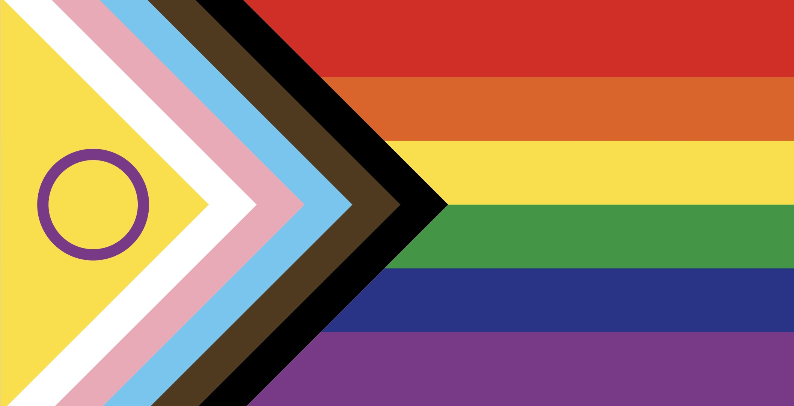

Opportunities in the Corn Lab
Corn Lab
The Corn Lab is in Pullman, Washington, in the Pacific Northwest of the United States. We are part of the School of Biological Sciences at Washington State University (WSU). In addition to our live fishes and computational work, we are intimately tied to the interior Northwest's largest vertebrate collection, the Conner Museum of Vertebrates, which has both a research collection and a public-facing display area.Postdoctoral research: I would be delighted to hear from you if you are interested in postdoctoral research in my lab! Please email me with a CV and a brief description of your research interests if you are interested in the work that we are doing.
Graduate students: I am always interested in hearing from motivated students who are looking for a Masters or PhD in macroevolution & functional morphology. If you are interested, please contact me with your CV and a brief description of your research interests. For those considering a PhD, I highly recommend reading Sonke Johnsen's advice for prospective PhD students here.
WSU's School of Biological Sciences ('SBS') begins application review for a fall semester start on Jan. 10. Here is a suggested timeline for an application for fall semester; detailed instructions for applying to SBS are available on the SBS website. All graduate programs in Biological Sciences are fully funded by a combination of research assistantship and teaching assistantships, which include tuition remission and a stipend: you will not need to pay to attend graduate school in SBS at WSU.
{kind=link}
International students: Unfortunately, SBS cannot sponsor Teaching Assistant appointments for students who are not eligible to become residents of Washington. For this reason, I can only consider international applicants that have fellowship support. If you would like to explore this option and have a funding agency for a fellowship in mind, I would be delighted to discuss your proposal materials.
Undergraduates: I am accepting undergraduate researchers in a limited capacity at this time. If you are interested in joining the Corn Lab and Conner Museum community, please email me with a brief description of your background and your interests.
Pullman, Washington
The Corn Lab is in Pullman, Washington. Pullman is a college town in the Palouse in eastern Washington, around 4 hrs' drive from Seattle, with great restaurants, a top notch farmers market, and easy access to beautiful outdoor recreation. We are very lucky to be part of the vibrant Palouse ecology and evolution community.
Washington state is an excellent place to live, with strong legal protections for women, people of color, undocumented individuals, and the LGBTQIA2S+ community. The Corn Lab acknowledges that our locations statewide are on the homelands of Native peoples who have lived in and stewarded this region from time immemorial. The WSU Pullman campus resides on the unceded homelands of the Nimiipuu (Nez Perce) Tribe and Palus people.